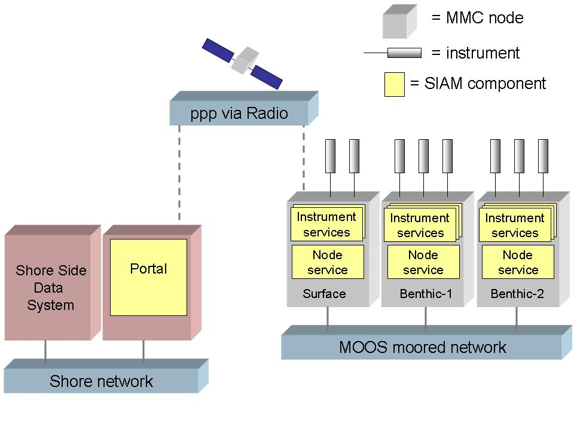

The lack of standard instrument protocols presents major challenges to observatory configuration and management; each instrument manufacturer specifies their own protocol to configure and instrument and acquire its data. SIAM addresses these challenges by providing a generic network interface to any instrument integrated with SIAM. Thus clients on the observatory network can interact with all instruments through the same generic interface protocol, regardless of the actual "native" instrument protocol. The standard interface leads to a very scalable architecture for observatory configuration and management. The translation between generic network interface and specific instrument protocols is handled by SIAM instrument services, which are like "instrument drivers", implemented for each kind of instrument. SIAM provides an application framework to help programmers quickly develop instrument services.
You can find a SIAM overview published in Proceedings of the IEEE 2004 Oceans Conference here.
Figure 1 shows some major SIAM components as deployed on the MOOS moored observatory. The gray blocks represent MOOS mooring controller (MMC) nodes at sea, with attached serial instruments shown as gray cylinders. The MMC nodes are interconnected by the at-sea fiber/wire network. Each MMC node hosts a SIAM node service object. The node service provides an interface to manage node resources, get information about attached instrument services, and other functions. The node services can be accessed by clients anywhere on the network through Java's RMI mechanism. The node RMI interface is defined {@link org.mbari.siam.distributed.Node here}.
Each MMC node also hosts a SIAM instrument service for every
physical instrument attached to the node. The instrument service
provides
a generic RMI interface that enables network access to every
instrument, with methods to acquire data, retrieve data, configure the
physical instrument, and other functions. The instrument RMI interface
is defined {@link org.mbari.siam.distributed.Instrument here}. Any
instrument integrated
with SIAM can be accessed through this generic interface, regardless of
the
actual protocol of the specific instrument.

Figure 2 shows some relationships between a node service and its associated instrument services. In addition to managing node resources (e.g. power, telemetry link), the node service creates instrument service objects for each physical instrument attached to the node. Each instrument service encapsulates a serial connection to its physical instrument. Clients (either local to the node or from across the network) access the instrument service's generic RMI interface to request data, configure the instrument, etc; the instrument service issues the appropriate serial command(s) to the serial device to fulfill the specific client request.
Note that the node understands MBARI PUCK protocol, and can extract and execute the SIAM instrument service code from the instrument serial port using PUCK protocol, thus implementing automatic "plug and work" functionality. See http://www.mbari.org/pw for more details.
Figure 2: Relationships between Node and Instrument services
The instrument service classes have been designed to be portable to many observatory environments; in particular, the instrument service does not rely directly on the node service class. Instead the instrument service interacts with the Parent interface to request power, positional information, and other functions. Node service implements the Parent interface, and of course other implementations of Parent are possible.
The {@link org.mbari.siam.core org.mbari.siam.core} package includes base classes that can be extended to implement services for specific instruments. These base classes implement generic functionality that is the same for all instrument services, and define abstract methods that must be implemented in specific ways for specific instruments. In general, the abstract method implementations depend on the specific serial protocol of the instrument. This application framework approach helps programmers quickly develop robust instrument services in several ways:
Figure 3 shows the class hierarchy of the instrument service application framework. {@link org.mbari.siam.core.BaseInstrumentService BaseInstrumentService} implements generic methods that manage the life-cycle of every instrument service. BaseInstrumentService has two immediate subclasses; {@link org.mbari.siam.core.PolledInstrumentService PolledInstrumentService} and {@link org.mbari.siam.core.StreamingInstrumentService StreamingInstrumentService}. Services for instruments that are "polled" for their data extend the PolledInstrumentService class. Services for instruments that asynchronously "stream" data extend the StreamingInstrumentService class.
To implement a specific instrument service, you simply extend either
PolledInstrumentService or StreamingInstrumentService, depending on the
type
of instrument. Your subclass, whether polled or streaming, must
implement the following abstract methods defined by
BaseInstrumentService:
{@link org.mbari.siam.core.BaseInstrumentService#initPromptString
initPromptString}
{@link org.mbari.siam.core.BaseInstrumentService#initSampleTerminator
initSampleTerminator}
{@link org.mbari.siam.core.BaseInstrumentService#initCurrentLimit
initCurrentLimit}
{@link org.mbari.siam.core.BaseInstrumentService#initInstrumentPowerPolicy
initInstrumentPowerPolicy}
(see Instrument power management)
{@link org.mbari.siam.core.BaseInstrumentService#initCommunicationPowerPolicy
initCommunicationPowerPolicy}
(see Instrument
power management)
{@link org.mbari.siam.core.BaseInstrumentService#initInstrumentStartDelay
initInstrumentStartDelay}
{@link org.mbari.siam.core.BaseInstrumentService#initMaxSampleBytes
initMaxSampleBytes}
{@link org.mbari.siam.core.BaseInstrumentService#getSerialPortParameters
getSerialPortParameters}
{@link org.mbari.siam.core.BaseInstrumentService#createDefaultSampleSchedule
createDefaultSampleSchedule}
Your service can optionally override the following methods of
BaseInstrumentService:
{@link org.mbari.siam.core.BaseInstrumentService#initializeInstrument
initializeInstrument}
{@link org.mbari.siam.core.BaseInstrumentService#setClock setClock}
{@link org.mbari.siam.core.BaseInstrumentService#getInstrumentStateMetadata
getInstrumentStateMetadata}
When extending PolledInstrumentService, you must implement the
following abstract methods:
{@link org.mbari.siam.core.PolledInstrumentService#requestSample
requestSample}
When extending StreamingInstrumentService, you must implement the
following abstract methods:
{@link org.mbari.siam.core.StreamingInstrumentService#startStreaming
startStreaming}
{@link org.mbari.siam.core.StreamingInstrumentService#stopStreaming
stopStreaming}
{@link org.mbari.siam.core.StreamingInstrumentService#isStreaming
isStreaming}
E.g. see {@link org.mbari.siam.devices.seabird.base.Seabird} and {@link org.mbari.siam.devices.nortek.Aquadopp Aquadopp} for examples of polled and streaming services, respectively.
The following table provides guidelines for setting power policy
based on instrument characteristics. The instrument service specifies
power policy when implementing the {@link
org.mbari.siam.core.BaseInstrumentService#initInstrumentPowerPolicy
initInstrumentPowerPolicy}
and
{@link org.mbari.siam.core.BaseInstrumentService#initCommunicationPowerPolicy
initCommunicationPowerPolicy} methods.
| Instrument power policy | Comms power policy | |
| PowerPolicy.ALWAYS | Instrument has long warm-up or initialization time; instrument doesn't tolerate multple power cycles |
|
| PowerPolicy.WHEN_SAMPLING |
Instrument can tolerate multiple
power cycles |
Maximum power saving |
| PowerPolicy.NEVER |
Battery-powered instruments |
Not applicable |